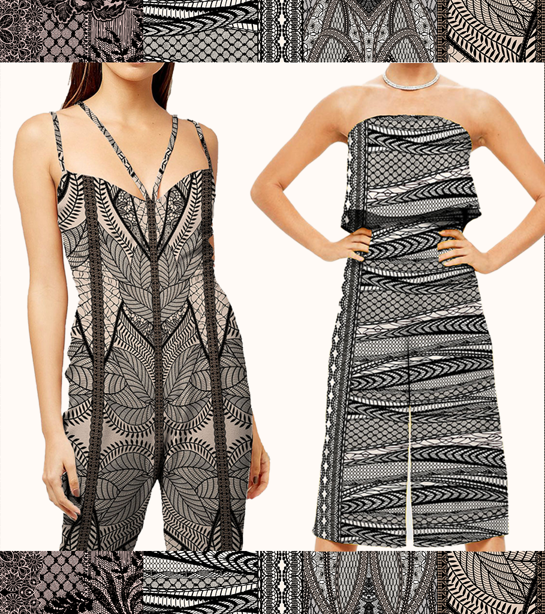

Cat Bassett Designs
Folk Pop Salon
This one leans into ornament, framing, medallions, and playful pattern history. It feels more like a decorative salon than a digital portfolio, while still giving the work center stage.




Shows off decorative instincts at full volume.
If Cat wants the site to visibly express a love of ornament and motif, this is the one that most proudly turns the interface into part of the show.
Pattern with personality
The decorative wrappers help the site feel authored, playful, and less like a generic shell.
Frames as theatre
Images become displayed objects, which helps elevate the portfolio into a more memorable scene.
High fun, not low polish
The point is not chaos for its own sake, but giving Cat a much more distinctive visual signature.
Decorative wrappers, clean destinations.
Even the wildest presentation still works best if the actual category entry points remain obvious and usable.
Embroideries
This category feels especially aligned with the salon-like, decorative richness of the concept.

Prints
Painterly and ornamental collections would feel especially alive in this framing.
Kids
The warmth and decorative play gives younger categories real charm without feeling childish.